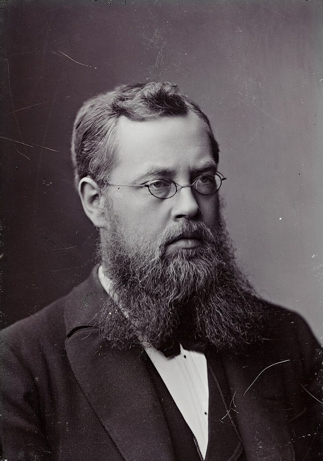
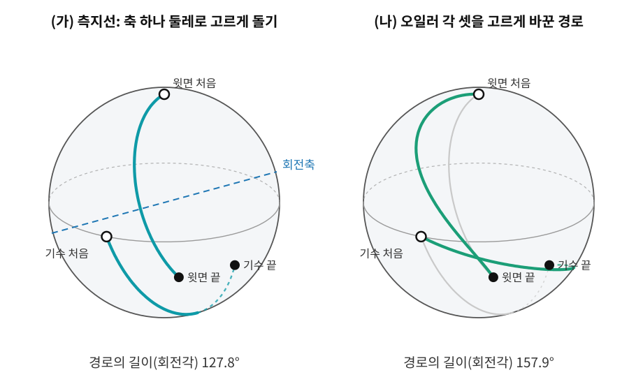
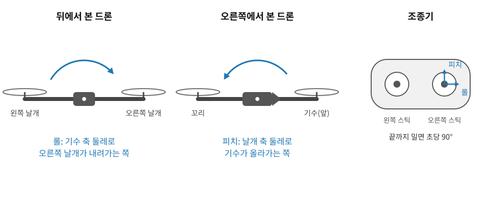
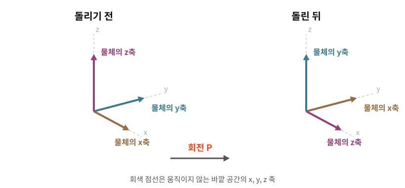
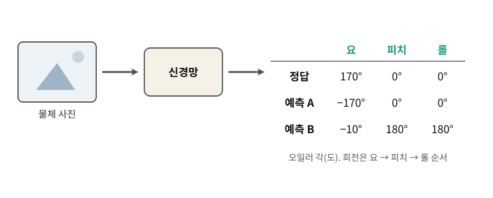

문제 8에서 학습한 파라미터 w는 길이가 1인 벡터여서 구면 위의 점 하나, 다시 말해 방향 하나였다. 로봇 팔 끝의 집게나 드론, 카메라처럼 물체의 자세를 학습하거나 추정하려면 방향 하나로는 모자라는데, 집게가 가리키는 방향에 더해 그 축 둘레로 얼마나 돌아가 있는지까지 정해야 하기 때문이다. 자세를 각도 셋으로 적으면 짐벌 잠금(고리 두 개의 축이 겹쳐 회전 방향 하나를 잃는 일) 같은 좌표의 탈이 생겨서, 게임과 3D 프로그램은 자세를 회전 행렬이나 사원수(회전을 숫자 네 개로 적는 방법)로 저장한다.
3 × 3 회전 행렬의 세 열은 물체에 붙은 앞·왼쪽·위 축이 바깥 공간에서 가리키는 방향이고, 물체 위의 점 p는 회전 행렬을 곱한 자리로 옮겨진다. 돌린 뒤에 또 돌리면 두 회전 행렬의 곱이 되므로 회전들은 곱셈으로 이어 붙는다. 지수 사상이라는 이름을 설명할 때 본 양수들의 공간도 곱셈으로 이어 붙는 공간이었고, 그곳에서는 지수 사상이 보통의 지수함수였다. 회전 행렬들은 어떤 공간을 이루고, 그 공간에서 측지선과 지수 사상은 무엇이 될까?
역사: 소푸스 리 (Sophus Lie, 1842–1899)

노르웨이의 수학자 소푸스 리(Sophus Lie)는 에바리스트 갈루아(Évariste Galois)가 대수방정식에서 한 일을 미분방정식에서 하고 싶어 했다. 갈루아는 방정식의 근들을 서로 바꾸는 치환들의 묶음(군)을 보고 그 방정식을 근의 공식으로 풀 수 있는지를 가렸다. 리는 미분방정식을 바꾸지 않는 변환들의 묶음으로 미분방정식을 읽으려 했는데, 근의 치환은 개수가 유한한 반면 이런 변환은 돌리는 각도처럼 끝없이 이어진 값으로 매겨졌다.
1870년 여름 프랑스와 프로이센 사이에 전쟁이 터졌을 때 리는 파리에 머물며 연구하고 있었다. 8월에 걸어서 이탈리아로 가려던 그는 퐁텐블로 근처에서 독일 첩자로 몰려 붙잡혔는데, 들고 다니던 수학 노트가 암호문으로 여겨졌기 때문이다. 리는 한 달을 갇혀 지낸 뒤 수학자 가스통 다르부(Gaston Darboux)가 나서 준 덕에 풀려났다.
1873년 무렵부터 리는 끝없이 이어진 변환의 묶음을 다루는 이론을 세웠고, 그 열쇠는 항등 변환(아무것도 바꾸지 않는 변환) 바로 곁만 보는 것이었다. 항등 변환에서 모든 방향으로 미분하면, 변환마다 점들이 움직이기 시작하는 속도가 나온다. 리는 이 속도를 「무한소 변환」이라 불렀고 그 모음을 「무한소 군」이라 했는데, 지금은 이 모음을 리 대수(Lie algebra)라 부른다. 이 이론은 프리드리히 엥겔(Friedrich Engel)과 함께 1888년부터 1893년까지 펴낸 세 권짜리 『변환군 이론(Theorie der Transformationsgruppen)』에 모였다.
김민준
근을 바꾸는 치환이면 표로 다 적어 볼 수 있잖아요. 근이 셋이면 여섯 가지예요.
선생님
회전은 어때요? 축과 각도를 고르는 방법을 표로 적을 수 있을까요?
김민준
1°, 0.5°, 0.25°… 끝이 없네요. 축도 끝없이 고를 수 있고요.
이서연
그래서 항등 변환 곁만 본 거구나. 아주 조금 돌릴 때 점들이 움직이기 시작하는 속도만 남기면, 끝없는 표 대신 속도 몇 개로 적히니까.
선생님
다 적을 수 없는 것을 한 점 곁의 속도로 줄인 거예요. 곡면을 다룰 때 접선공간부터 본 것과 같은 선택이에요.
아홉 칸 가운데 마음대로 정할 수 있는 것은 셋
회전 행렬들이 몇 차원 공간을 이루는지부터 세어 보자. 회전 행렬의 칸은 아홉 개지만 아무 숫자나 넣을 수는 없다. 세 열은 물체에 붙은 세 축이라 길이가 1이어야 하고(조건 셋) 서로 수직이어야 하므로(조건 셋), 조건 여섯 개를 한 식으로 모으면 아래와 같다.
R⊤R=I,detR=1R회전행렬 (회전들의공간의점하나)
I는 단위행렬로, 아무것도 돌리지 않는 회전이다. 둘째 조건 detR=1은 거울에 비친 모습(오른손 좌표를 왼손 좌표로 뒤집는 행렬)을 빼는 조건이라 차원을 줄이지 않는다. 아홉 칸에서 조건 여섯을 빼면 셋이 남고, 실제로 회전 하나는 축의 방향(숫자 둘)과 도는 각도(숫자 하나)로 정해진다. 회전 행렬들은 아홉 칸짜리 공간 안에서 어디를 확대해도 3차원 평면처럼 보이는 3차원 매니폴드를 이룬다. 평면의 회전을 나타내는 2 × 2 행렬이면 칸 넷에서 조건 셋을 빼 1차원이 되고, 실제로 각도 하나로 정해진다.
이 매니폴드의 접선공간을 항등 회전 I에서 구해 보자. 시각 0에 I를 지나는 회전들의 곡선 R(t)를 잡고, 시각 0의 속도(칸마다 시각으로 미분한 행렬)를 Ω(대문자 오메가)라 하자. 모든 시각에 R⊤R=I이므로 양변을 미분해 시각 0을 넣으면 Ω⊤+Ω=0이다. 접선 벡터는 전치하면 부호만 바뀌는 행렬(반대칭 행렬)이어야 하고, 이런 행렬은 대각선이 모두 0이며 나머지 칸이 숫자 셋으로 다 정해진다.
세 숫자를 모은 ω=(ωx,ωy,ωz)(ω는 오메가)는 물리에서 배운 각속도로, 방향이 회전축이고 길이가 1초에 도는 각도(라디안)다. 점 p에 Ω를 곱하면 외적 ω×p가 되어 그 점이 움직이기 시작하는 속도가 나온다. 접선공간이 3차원이라는 것도 앞에서 센 차원과 맞는다.
여기까지는 구면에서 한 일과 같고, 다른 점은 회전끼리 곱할 수 있다는 것이다. 자세 R을 지나는 곡선은 항등 회전을 지나는 곡선에 R을 곱해 얻으므로, 자세 R의 접선 벡터는 모두 RΩ로 적힌다. 구면에서는 점마다 접선공간을 새로 그려야 했지만, 회전들의 공간에서는 항등 회전의 접선공간 하나를 곱셈으로 어디든 옮겨 쓴다. 드론의 자이로 센서(각속도를 측정하는 센서)가 내는 숫자 셋도 드론 몸에 붙은 축 둘레의 각속도 ω이고, 자세는 R′=RΩ를 따라 바뀐다.
이처럼 매니폴드이면서, 두 점을 곱해 다시 그 공간의 점을 얻고 곱셈을 되돌릴 수도 있는 공간을 리 군 (곱할 수 있는 매니폴드 / Lie Group)이라 부른다. 곱하기와 되돌리기는 매끄러운 함수여야 한다. 3차원 회전 행렬들의 리 군은 SO(3)(3차원 특수 직교군, 행렬식이 1인 3 × 3 직교 행렬들)이라 적고, 항등 회전의 접선공간인 반대칭 행렬들의 공간이 리 대수다. 「군」이라는 이름은 대칭을 모을 때 쓰는 군과 같은 뜻이고, 군의 정의와 대칭은 『스펙트럼으로 보기: 에피사이클에서 구면 조화까지』의 「군: 대칭을 모은 것」이 다룬다(이어 읽기).
지수 사상은 행렬의 지수함수가 된다
항등 회전에서 각속도 Ω로 출발해 그 각속도를 바꾸지 않고 계속 도는 곡선을 생각하자. 이 곡선은 R′=RΩ를 만족하는데, 숫자 하나짜리 식 y′=ay의 답이 eat였듯이 R′=RΩ의 답도 지수함수를 행렬로 넓힌 급수다.
z축 둘레로 초당 90°(각속도 ω=(0,0,π/2))로 1초 동안 돌리면서 급수를 한 항씩 더해 보자. 넷째 칸은 그 합 S로 S⊤S−I를 계산했을 때 가장 큰 칸이고, 0이면 그 합이 회전 행렬이다.
더한 항의 수
(1, 1) 칸
(2, 1) 칸
회전 조건에서 벗어난 정도
1
1.0000
0.0000
0
2
1.0000
1.5708
2.47
3
−0.2337
1.5708
1.52
4
−0.2337
0.9248
0.090
6
0.0200
1.0045
0.0095
10
0.0000
1.0000
0.000007
두 항까지 더한 I+Ω는 문제 8에서 구면 밖으로 나간 w+v처럼 회전들의 공간 밖에 있다. 항을 더할수록 (1, 1) 칸은 cos 90° = 0으로, (2, 1) 칸은 sin 90° = 1로 다가가고, 항을 열 개쯤 더하면 z축 둘레로 90° 돌리는 행렬이 되어 점 (1, 0, 0)을 (0, 1, 0)으로 옮긴다. 급수를 끝까지 더하면 흔히 로드리게스 공식이라 부르는 닫힌 형태가 나온다.
로드리게스 공식이 주는 행렬은 ω의 방향을 축으로 θ만큼 돌리는 회전이고, 무작위로 고른 각속도 세 개로 급수와 비교하면 칸마다의 차이가 2×10−15보다 작았다. 대각합(대각선 칸의 합)을 구하면 trexp(Ω)=1+2cosθ이므로, 회전 행렬만 주어져도 회전각을 읽어 낼 수 있다.
일정한 각속도로 도는 것이 회전들의 공간의 직선
곡선 exp(tΩ)가 회전들의 공간의 측지선이다. 원기둥의 수평 원이 측지선이었던 것은 그 원이 곡면에 수직인 방향으로만 휘었기 때문이었는데, 회전들의 공간도 아홉 칸 공간에 놓인 매니폴드라서 같은 검사를 할 수 있다. 아홉 칸 공간의 내적(칸끼리 곱해 더한 값)을 쓰면 자세 R의 접선 벡터 RΩ와 수직인 행렬은 RS(S는 대칭 행렬)로 적히는 것들이다. 곡선 exp(tΩ)의 가속도는 R(t)Ω2이고 Ω2은 대칭 행렬이므로, 가속도는 늘 회전들의 공간에 수직이다. 한 축 둘레를 일정한 각속도로 도는 회전이 회전들의 공간의 직선이다.
거리도 이 측지선의 길이로 정한다. 아홉 칸 공간의 내적을 그대로 쓰면 각속도 행렬의 길이가 각속도 벡터 길이의 2배가 되므로(각속도 ω=(0.3,−0.8,0.5)이면 길이 0.9899, 각속도 행렬의 칸 제곱합의 제곱근은 1.4000), 보통 그 내적의 절반을 쓴다. 그러면 항등 회전에서 시각 1까지 간 측지선의 길이가 회전각 θ 자체가 된다. 회전 행렬을 곱해도 길이는 바뀌지 않으므로, 두 자세 R1과 R2 사이의 거리는 R1⊤R2(R1에서 R2로 가려면 더 돌려야 하는 회전)의 회전각이다.
자세를 오일러 각(물체를 정해진 순서대로 세 번 돌리는 각도로 자세를 적는 좌표. 항공기에서는 요·피치·롤)으로 적고, 그 좌표 위에서 곧게 옮겨 가면 어떻게 될까? 아래 그림은 처음 자세 I에서 요 150°, 피치 45°, 롤 120°인 자세까지 두 방법으로 옮겨 가는 동안, 물체의 기수(앞 축의 끝)와 윗면(위 축의 끝)이 구면 위에 그리는 자취다.

처음 자세 I에서 끝 자세(요 150°, 피치 45°, 롤 120°)까지 물체의 기수와 윗면 끝이 그리는 자취. 속 빈 점이 처음, 찬 점이 끝이다. (가) 측지선 exp(tΩ): 물체가 회전축(파란 점선) 하나 둘레로 고르게 돌아 두 자취가 모두 원호가 된다. (나) 오일러 각 셋을 0에서 끝 값까지 시각에 비례해 바꾼 경로. 회색은 (가)의 자취다. 자세가 지나간 경로의 길이는 회전각으로 (가) 127.8°, (나) 157.9°다
좌표 위의 직선은 회전들의 공간에서 직선이 아니어서, 오일러 각을 고르게 바꾼 경로는 측지선보다 1.24배 길다.
ML에서: 회전을 내놓는 신경망과 회전 위의 디퓨전
로봇이 움직이면서 자기 위치와 자세를 추정하는 SLAM(지도를 그리면서 그 안에서 자기 위치를 찾는 일)은 자세를 리 군의 점으로 다룬다. 솔라(Joan Solà) 팀이 2018년에 로봇 공학자를 위해 추려 정리한 「A micro Lie theory for state estimation in robotics」는 추정값 R에 보정을 더하는 일을 Rexp(Ω)로 정의하고, 추정의 불확실성(공분산)을 그 점의 접선공간에 둔다. 여기서 움직이는 것은 로봇의 자세 추정값이다.
신경망이 회전을 직접 내놓게 할 때는 출력 숫자를 무엇으로 할지부터 문제다. 회전들의 공간은 아홉 칸이 모두 −1과 1 사이에 있고 조건식으로 닫혀 있어 구면처럼 컴팩트(유계이고 닫힌 공간)하므로, 좌표 하나로 끊김 없이 다 덮을 수 없다. 저우이(Yi Zhou) 팀은 2019년 CVPR 논문에서 더 나아가, 3차원 회전을 숫자 넷 이하로 적는 방법은 모두 어딘가에서 끊긴다(불연속)는 것을 보이고 오일러 각과 사원수가 신경망이 배우기 어려운 이유를 여기서 찾았다. 그 대신 숫자 여섯 개로 회전 행렬의 앞 두 열을 내놓게 한 뒤, 두 열을 길이 1로 맞추고 서로 수직이 되게 고쳐(그람–슈미트 과정) 셋째 열은 외적으로 만드는 연속인 방법을 제안했다. 여기서 움직이는 것은 신경망의 파라미터다.
생성 모델도 회전들의 공간 위에서 돌아간다. 리치(Adam Leach) 팀(2022)은 디퓨전 모델의 노이즈 과정을 SO(3) 위에서 돌려, 오일러 각에 노이즈를 더하는 단순한 방법보다 낫다는 실험 결과를 보고했다. 단백질 뼈대를 만드는 FrameDiff(ICML 2023)는 알파폴드2(AlphaFold2)가 쓴 방식대로 아미노산 하나를 회전 행렬 하나와 위치 하나(프레임)로 적고, 회전 부분에는 회전들의 공간 위의 브라운 운동(작은 무작위 회전을 끝없이 이어 붙인 것)으로 노이즈를 넣는다. 이 노이즈가 처음 자세를 어떤 자세로 데려갈 확률은 두 자세 사이의 측지선 거리로만 정해진다. 여기서 움직이는 것은 생성되는 분포, 다시 말해 아미노산마다의 자세다.
문제 9: 드론 스틱을 차례로 밀 때와 함께 밀 때
확인 드론 시뮬레이터에서 오른쪽 스틱을 오른쪽 끝까지 밀면 드론이 기수 축 둘레로 초당 90°씩 오른쪽 날개가 내려가도록 돌고(롤), 위쪽 끝까지 밀면 날개 축 둘레로 초당 90°씩 기수가 올라가도록 돈다(피치). 회전축은 늘 드론 몸에 붙은 축이다. 수평으로 떠서 북쪽을 보던 드론이 (가) 롤 1초 뒤 피치 1초 (나) 피치 1초 뒤 롤 1초 (다) 스틱을 대각선으로 밀어 롤과 피치를 함께 1초 동안 하면, 기수는 각각 어느 방향을 가리키는가? 세 경우의 끝 자세는 같은가? 스틱을 조금만 밀어 초당 9°씩 돌면 어떻게 되는가?

문제 9의 드론과 조종기. 뒤에서 본 롤(기수 축 둘레로 오른쪽 날개가 내려가는 회전)과 오른쪽에서 본 피치(날개 축 둘레로 기수가 올라가는 회전), 두 회전을 내는 오른쪽 스틱
같이 풀기 세션 9
이서연
(가)랑 (나)는 지우개를 드론이라 치고 손으로 돌려 봤어요. (가)는 오른쪽으로 90° 눕히면 드론의 윗면이 오른쪽을 보게 되니까, 그다음 기수를 들면 기수가 오른쪽을 가리켜요.
김민준
나도 휴대폰으로 해 봤는데 같아. (나)는 기수를 먼저 하늘로 세운 다음 기수 축 둘레로 도니까 기수는 그대로 위고.
이서연
순서만 바꿨는데 오른쪽과 위로 갈리네. 그럼 (다)는 두 회전을 반씩 섞은 거니까 기수가 오른쪽과 위의 한가운데, 오른쪽 위 45°쯤을 가리키겠지.
선생님
두 스틱을 함께 밀면 드론은 매 순간 어느 축 둘레로 돌아요?
김민준
기수 축 둘레로 초당 90°, 날개 축 둘레로 초당 90°요. 각속도는 화살표니까 더하면… 앞과 오른쪽 사이 대각선 축 둘레로 초당 902≈127.3°예요. 그 축으로 1초 돌려 보면 기수가 앞으로 0.197, 오른쪽으로 0.803, 위로 0.563이에요. 위로는 34.2°만 들렸어요.
이서연
45°가 아니네. (가)도 (나)도 아니고. 평면에서는 30° 돌리고 40° 돌리나 한꺼번에 70° 돌리나 같아서 반씩 섞으면 된다고 봤는데, 공간에서는 아니구나.
선생님
스틱을 조금만 밀어서 초당 9°씩이면요?
김민준
세 경우의 기수 방향이 가장 많이 벌어져도 1.41°예요. 초당 90°일 때는 (가)와 (나)의 기수가 90°나 벌어졌는데요.
선생님
함께 밀 때는 각속도를 더했고, 차례로 밀 때는 회전을 이어 붙였죠. 각각 어느 공간에서 하는 일이에요?
김민준
더하는 건 접선공간에서 하는 일이고, 이어 붙이는 건 회전 행렬을 곱하는 거니까 회전들의 공간에서 하는 일이에요. 조금만 돌릴 때는 둘이 거의 같다가 크게 돌리면 갈라지는 거네요.
문제 10: 축을 돌려 바꾸는 회전의 로그
계산 물체의 x축을 y축 자리로, y축을 z축 자리로, z축을 x축 자리로 보내는 회전을 P라 하자. (가) P를 3 × 3 행렬로 적고 회전 행렬의 조건 P⊤P=I, detP=1을 확인하라. (나) exp(Ω)=P가 되는 각속도 벡터 ω(그 각속도로 1초 동안 돌면 P가 되는 ω)를 구하라. (다) 길이가 π보다 긴 ω도 답이 될 수 있는가?

문제 10의 회전. 왼쪽은 돌리기 전 물체의 세 축, 오른쪽은 회전 P로 돌린 뒤 세 축이 놓인 자리다. 회색 점선은 움직이지 않는 바깥 공간의 x, y, z 축이다
같이 풀기 세션 10
김민준
(가)는 열마다 물체의 축이 가는 자리를 적으면 돼요. 첫 열이 x축이 가는 (0, 1, 0)이니까 P의 행은 차례로 (0, 0, 1), (1, 0, 0), (0, 1, 0)이고, P⊤P=I, detP=1이에요. (나)는 지수의 거꾸로니까 로그를 구하면 되죠. np.log(P) 했더니… 여섯 칸이 -inf예요.
선생님
행렬의 지수는 급수로 구했죠. np.exp는 그 급수를 계산하는 함수였나요?
김민준
아, 칸마다 e를 올리는 함수예요. np.log도 칸마다 로그를 내니까 0인 칸에서 -inf가 나온 거고요. 행렬의 로그는 따로 구해야겠네요.
이서연
그럼 각속도의 뜻대로 가 보자. 방향은 회전축인데, 회전축 위의 벡터는 돌려도 안 움직이잖아. P에 (1, 1, 1)을 넣으면 (1, 1, 1)이 나와. 축은 (1, 1, 1) 방향이야.
선생님
각도는요?
이서연
축에 수직인 벡터 하나를 돌려 볼게요. u=(1,−1,0)이면 Pu=(0,1,−1)이고, 둘의 내적 −1을 길이 제곱 2로 나누면 −1/2이니까 120°예요. 대각합으로 봐도 1+2cosθ=0이라 같고요.
선생님
도는 방향은요? 같은 축 둘레로 거꾸로 120° 돌려도 각은 120°로 나와요.
이서연
u×Pu=(1,1,1)이니까 오른손 규칙으로 (1, 1, 1) 방향으로 도는 게 맞아요. 그러면 ω는 (1, 1, 1) 방향으로 길이가 2π/3인 벡터, 칸마다 2π/(33)≈1.2092예요.
김민준
그 Ω를 급수에 넣으니 P가 그대로 나와요. np.exp로 하면 3.3508 같은 칸이 생겨서 회전 행렬도 아니고요.
이서연
그런데 축을 반대로 잡고 240° 돌려도 P잖아. ω가 하나가 아니네.
김민준
칸마다 −2.4184를 넣어도 정말 P가 나와. 길이는 4.19라 π보다 길고.
선생님
그래서 회전 벡터는 보통 길이를 π 이하로 잡아요. 꼭 반 바퀴인 회전만 빼면 그 안에서는 회전 하나에 ω 하나예요. 구면에서 발사 속력이 π를 넘으면, 반대 방향으로 더 짧게 쏜 것과 같은 점에 떨어지던 것과 같아요.
문제 11: 자세를 예측하는 신경망의 오차
계산 사진 한 장을 받아 물체의 자세를 오일러 각 (요, 피치, 롤)로 내놓는 신경망이 있다(회전은 요 → 피치 → 롤 순서). 정답이 (170°, 0°, 0°)인 사진에 두 신경망이 A = (−170°, 0°, 0°), B = (−10°, 180°, 180°)를 내놓았다. (가) 세 각도 차이의 절댓값을 더한 오차는 각각 얼마인가? (나) 예측 자세에서 정답 자세로 가려면 더 돌려야 하는 회전의 회전각은 각각 얼마인가? (다) 학습의 손실로는 무엇을 쓰는 것이 좋은가?

문제 11의 신경망. 물체 사진을 받아 오일러 각 (요, 피치, 롤)을 내놓는다. 표는 정답과 두 예측(도 단위)이다
같이 풀기 세션 11
김민준
(가)는 바로 나와요. A는 ∣−170−170∣=340°, B는 180 + 180 + 180 = 540°예요. 둘 다 크게 틀렸고 B가 더 나빠요.
이서연
A는 그렇게 보면 안 돼. 요는 360° 돌면 제자리라서 −170°는 190°와 같으니까 차이는 20°야. 각도마다 360°를 더하거나 빼서 차이를 가장 작게 맞춰야 해.
선생님
그렇게 맞추면 B는요?
이서연
180° 차이는 360°를 더하고 빼도 180°라서 세 각도 모두 180°씩 차이가 남아요. B는 540°로 여전히 많이 틀렸어요.
선생님
(나)로 가 봐요. 예측과 정답을 회전 행렬로 바꾼 뒤 R예측⊤R정답의 회전각을 구하면요?
김민준
코드로 해 볼게요. A는 20.00°, 서연이 말한 대로예요. 그런데 B는… 0.00°예요. 두 행렬을 칸마다 빼 보니 차이가 10−16 정도라서, B는 정답과 똑같은 자세예요.
이서연
세 각도가 모두 180°씩 다른데 같은 자세라고요?
선생님
B를 손으로 따라가 보세요. 요, 피치, 롤 순서로요.
이서연
요가 정답보다 180° 달라서 처음엔 정답의 반대쪽을 봐요. 피치 180°로 기수를 하늘 너머로 넘기면 다시 정답 방향을 보는데 배가 위로 가고, 거기서 롤 180°로 뒤집으면… 정답 자세네요. 문제 10의 축 바꾸기 회전에 회전 벡터가 둘 있었던 것처럼, 오일러 각도 자세 하나를 서로 다른 숫자 셋으로 적을 수 있는 좌표라서 각도끼리 빼면 같은 자세도 멀다고 나오는 거예요.
선생님
그럼 (다)는요?
김민준
좌표 숫자를 빼지 말고 회전들의 공간에서 두 자세 사이의 측지선 길이, 그러니까 R예측⊤R정답의 회전각을 손실로 쓰면 돼요. 그러면 A는 20°, B는 0°로 제대로 나와요.
선생님
그래요. 두 자세가 얼마나 다른지는 좌표 숫자를 빼서가 아니라 회전들의 공간 위의 거리로 봐요.